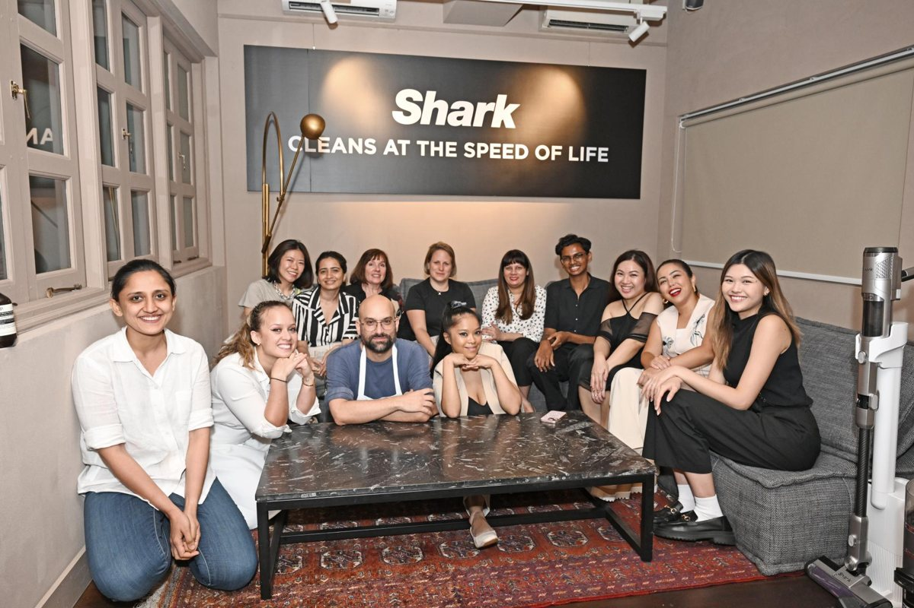
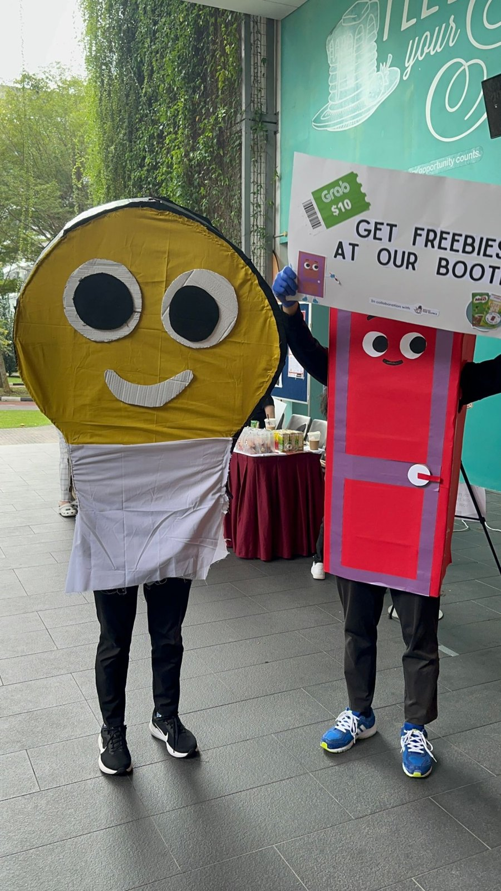
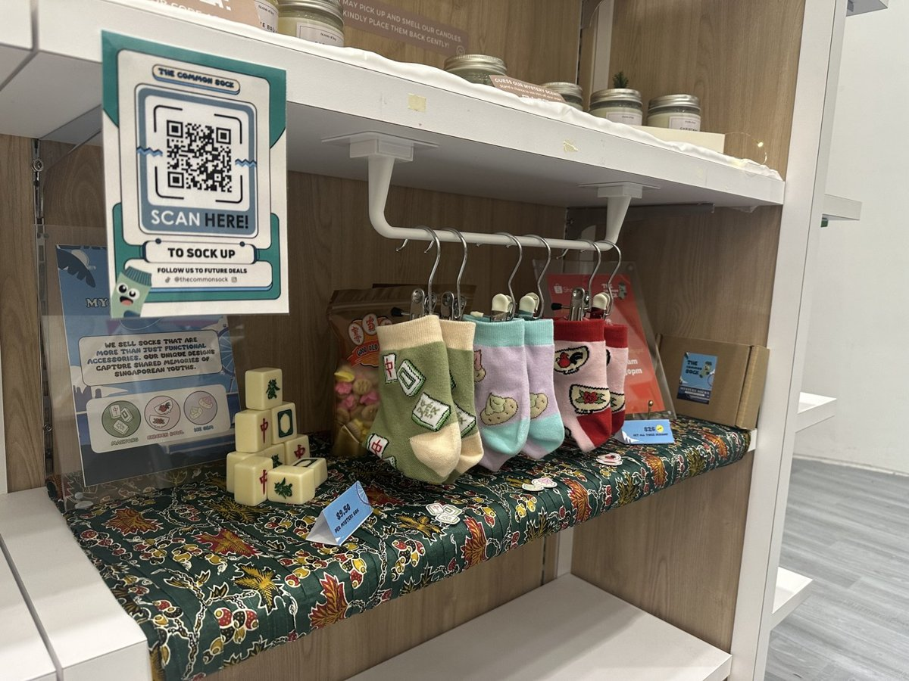
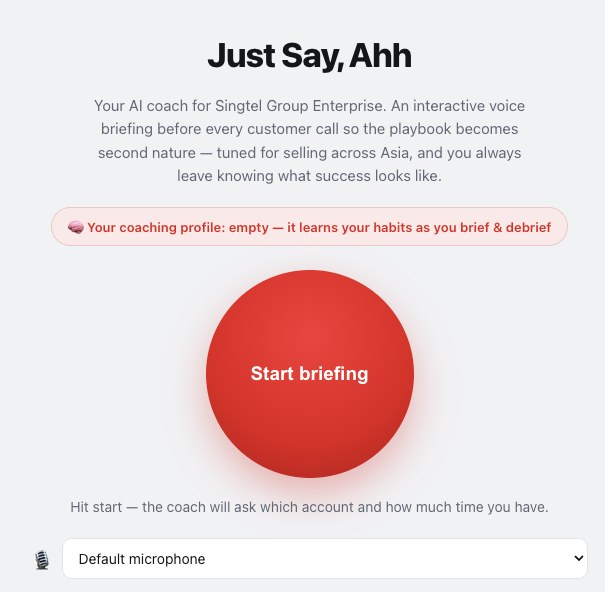
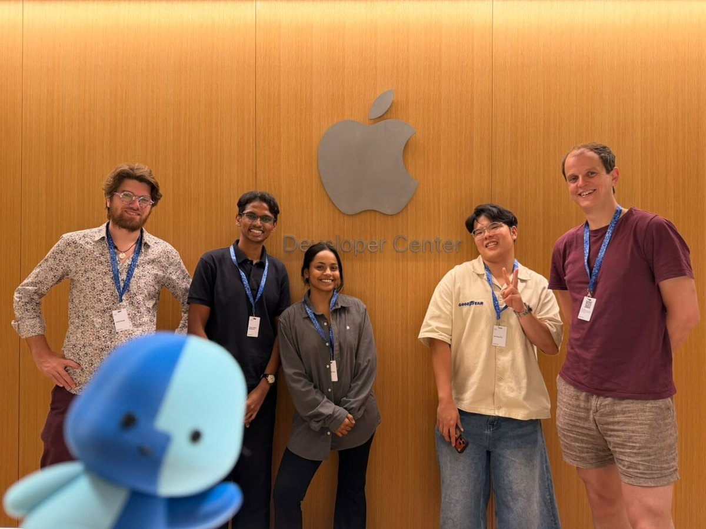
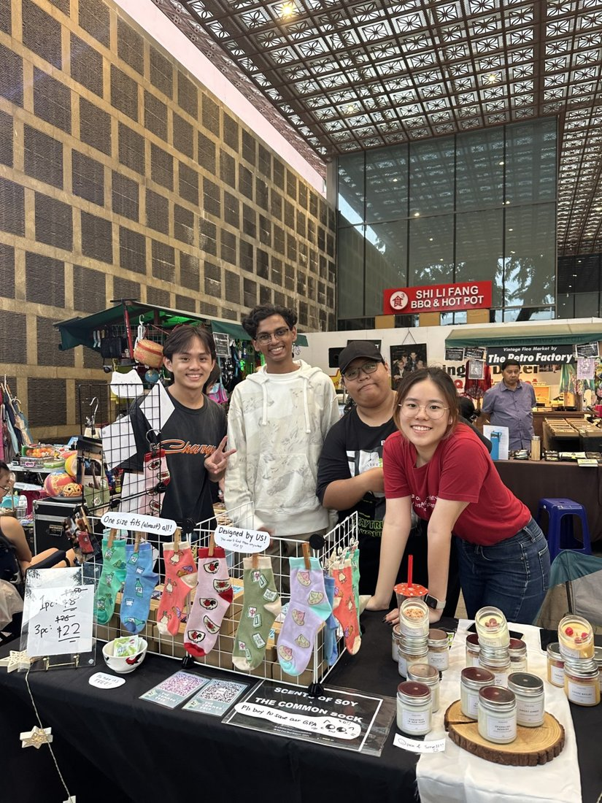

Interdisciplinary Problem Solver
I blend my background in digital marketing with Politics, Law & Economics to solve tough problems with different lenses.
Joshua Matthias · the working wall
I’m Joshua. I help teams solve complex problems and make decisions they can trust, especially where policy, technology, and people meet.
Pick up the magnifying glass
and hold it over a note
About
I break down messy problems, work out what matters most, and turn it into clear recommendations that both technical and non-technical teams can act on.
I'm a Politics, Law & Economics student at SMU and an Associate Consultant at Growth-X Consulting, with 2+ years of experience across digital marketing, AI transformation, and law. That includes the Ministry of Finance, Eldan Law, SharkNinja and UOB FinLab.
When I'm not at my desk, you'll find me going for long runs, taking pictures at the latest museum exhibition, or starting events that bring communities together.
I blend my background in digital marketing with Politics, Law & Economics to solve tough problems with different lenses.
I'm actively involved in AI Hackathons, Innovation Challenges, and Demo Sessions to keep sharp and meet other passionate builders.
Organiser of networking and skill workshops for early career professionals looking to sharpen their AI skills.
Awarded SMU's premier undergraduate scholarship to study Politics, Law, & Economics (Bachelor of Social Science).
Selected work

Project managed SharkNinja's PR launch for the Shark HydroVac and Ninja Blast at Appetite, the sister restaurant of Michelin-starred Nouri.

[EDIT ME] One line about the campaign and what it achieved.

A sock brand I helped build from scratch: custom designs, a school retail display and a Shopee store.

A voice AI coach that briefs sales reps before every customer call, built for Singtel Group Enterprise. Winner at the GTM Builders AI Build Lab, Singapore.

A spatial note-taking app for Apple Vision Pro that lets you pull physical notes into your digital space.
Side quests
Contact
Have a project, an idea, or just want to say hello? My inbox is open.
SharkNinja's launch of the Shark HydroVac Wet & Dry Cordless Vacuum and the Ninja Blast Portable Blender.
I served as project manager for SharkNinja's MadeForYou PR Launch, held on 30th April 2024. The event took place at Appetite, the sister restaurant to the Michelin-starred Nouri, and showcased the newly released Shark HydroVac Wet & Dry Cordless Vacuum and the Ninja Blast Portable Blender.
Hands-on activities gave guests a first-hand look at how you can achieve cleaner homes, prepare Michelin-quality meals, and craft delicious smoothies and cocktails on the go with the latest product innovations.
[EDIT ME] What was the brief, and what made this launch hard to pull off?
[EDIT ME] What did you manage day to day? Timelines, vendors, the guest list, media and KOL outreach, the run of show.
A campaign built in collaboration with the Ministry of Social and Family Development (MSF).
[EDIT ME] What was the campaign, who was it for, and why did it matter?
[EDIT ME] What problem were you asked to solve?
[EDIT ME] What did you do? Strategy, creative, events, partnerships, channels.
Shopee Sales & Business Creation: building a sock brand from the first design to the first sale.

The Common Sock sells socks that are more than functional accessories. Our designs capture shared memories of Singaporean youths. [EDIT ME: add how it started and who was on the team.]
[EDIT ME] What was hard about starting a product business from nothing?
A voice AI coach that briefs sales reps before every customer call.
Just Say, Ah! is an AI coach for Singtel Group Enterprise. Before every customer call, the rep has an interactive voice briefing so the playbook becomes second nature. It is tuned for selling across Asia, and reps leave knowing what success looks like. It won the Singtel Category at the GTM Builders AI Build Lab in Singapore.
[EDIT ME] What problem did the hackathon brief give you?
[EDIT ME] How did you build it? Models, voice tools, how you decided what the coach says.
A note-taking app for Apple Vision Pro that pulls your physical notes into your digital space.
Built at Apple Spatial Hack 2026, this is a spatial note-taking app for Apple Vision Pro. It allows users to pull physical notes into their digital space.
[EDIT ME] What problem were you solving for people who take notes on paper?
[EDIT ME] How did you build it? What did you design, code or test, and how did the team split the work?
Helping early career builders navigate AI well.
tAIste Labs helps early career builders navigate AI well. [EDIT ME] Add a line on who comes and why you started it.
[EDIT ME] What gap were early career builders facing when it came to using AI well?
[EDIT ME] Describe your events and formats, such as the café sessions where members share what they are building.
[EDIT ME] What do you do as founder? Hosting, programming, partnerships, growing the community.